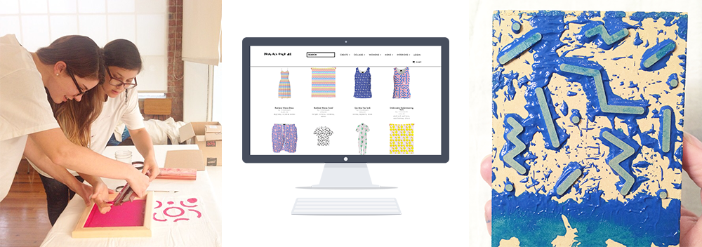

To make the patterns I either start from a sketch that
I digitize or begin straight in Illustrator. I typically go through several
iterations of each idea before I hit on something I really like.
Recently I have started exploring applying these patterns to textiles. I’m
really excited to see how they transition from the digital world to the physical.


I like to give myself a place to do something I love doing without a deadline
but with an outlet. I like to make them quickly most of the time, to generate
graphics, try things, move on, try other things. Sometimes I let myself obsess
over the details and make something really intricate. That feels good too.
Having this side project sharpens my visual design skills, serves as a way
for me to process all the visuals I'm absorbing as I go through my day, keeps
me looking for patterns out in the world that I want to riff on, and has made
me extremely good at the pattern-making tool in Illustrator.